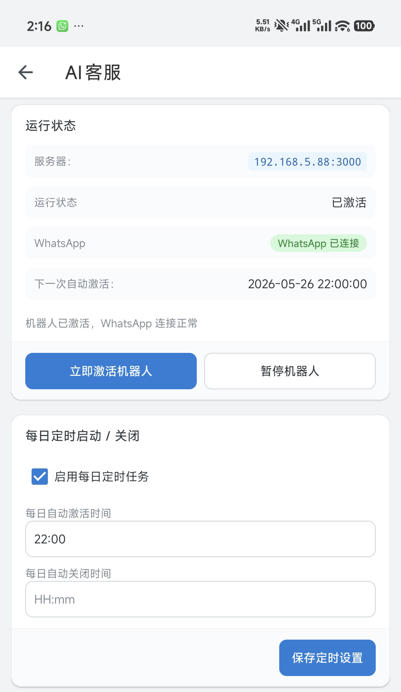
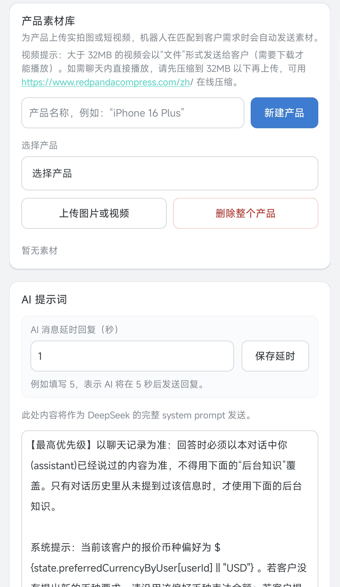

无需 WhatsApp Business API
支持个人 WhatsApp 与 WhatsApp Business， 降低接入门槛，更快上线承接广告流量。
专为 Facebook 广告引流场景打造的 WhatsApp AI 客服。 无需 WhatsApp Business API，个人号与商业号均可使用； 24 小时在线，多语言自动对话，按您的业务定制话术与销售逻辑。


从进线到意向筛选，一套 AI 覆盖引流、接待与跟进，显著降低漏单与人力成本。
支持个人 WhatsApp 与 WhatsApp Business， 降低接入门槛，更快上线承接广告流量。
AI 同时接待大量进线客户，自动回复、筛选意向、减少漏单， 让每一条广告咨询都有回应。
哪怕凌晨进线也能第一时间响应，最大化转化每一条咨询， 不错过任何时区的潜在客户。
具备对话与翻译能力，一套 AI 同时服务全球客户， 无需按语种额外配备人工客服。
AI 客服职责、话术按您的业务定制， 支持随时调整销售逻辑与回复策略。
可深度集成到您的官网，也可独立运行； 无网站也可部署，仅需提供产品与报价资料即可启动。
持续工作、不涨工资，显著降低长期运营成本， 把人力集中在高价值跟进与成交环节。
广告点击后直达 WhatsApp，AI 即时接待并引导留资、报价、下单意向。
官网按钮跳转 WhatsApp，AI 用客户母语解答产品、价格、物流问题。
自动收集规格、数量、目的国，筛选高意向客户再转交业务跟进。
同一套 AI 覆盖多语种市场，无需为每个国家单独建客服团队。
提供业务资料，我们协助完成话术配置与上线。
添加微信客服，说明您的行业、日咨询量与 WhatsApp 使用方式，我们将提供匹配的部署建议。
不需要。本方案支持个人 WhatsApp 与 WhatsApp Business，更适合中小团队快速承接广告流量。
可以。无网站也可独立部署，只需提供产品与报价等业务资料，由我们协助完成配置。
可以。AI 客服任务、话术与销售逻辑均按您的业务定制，并支持后续随时调整策略。
内置多语言智能翻译与对话能力，一套 AI 可同时接待全球进线，无需按语种增配人工。
请点击页面「联系客服」或「微信咨询客服」，扫码添加微信获取方案与报价。